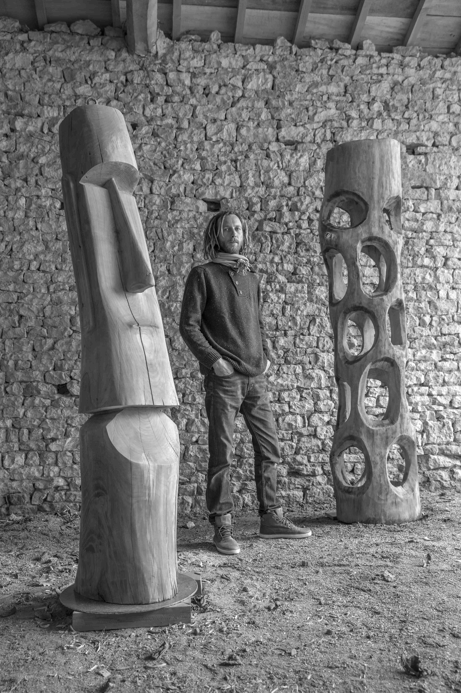

Frédéric Rolof
Sculpteur sur bois.
Présentation
"La beauté des choses existe dans l'esprit de celui qui les contemple".
Frédéric Rolof propose une production artisanale originale.
Artiste passionné, il multiplie les sources d'inspiration pour réaliser des sculptures très diversifiées.
Ce site présente certaines de ses œuvres ; n'hésitez pas à envoyer un message pour tout renseignement ou pour toute demande.
Exposition
Frédéric Rolof exposera à L’atelierCannes à partir du 10 mars 2017 (plus informations ...)
Photos

Contact
Deux-Sèvres, FRANCE
Mobile : +33688142697
Email : contact@fredericrolof.fr
Envoyer un message: